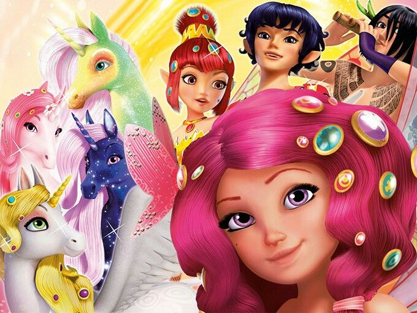
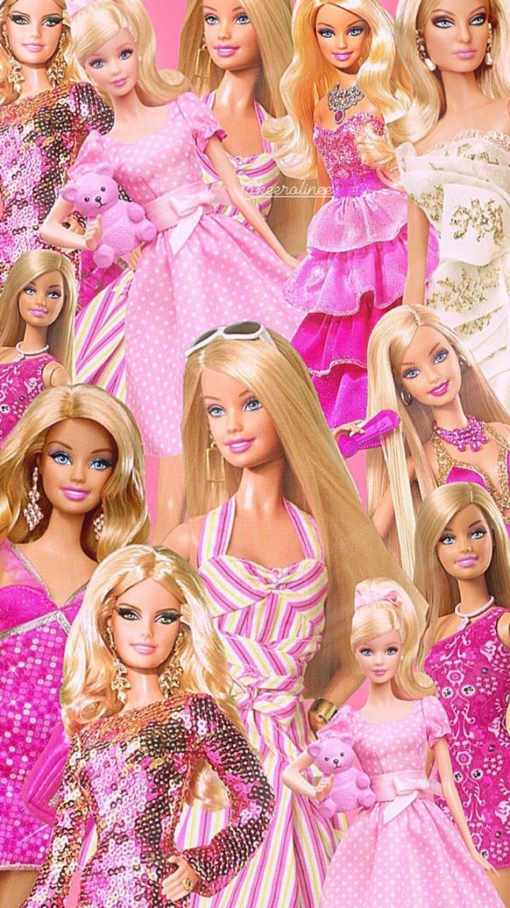
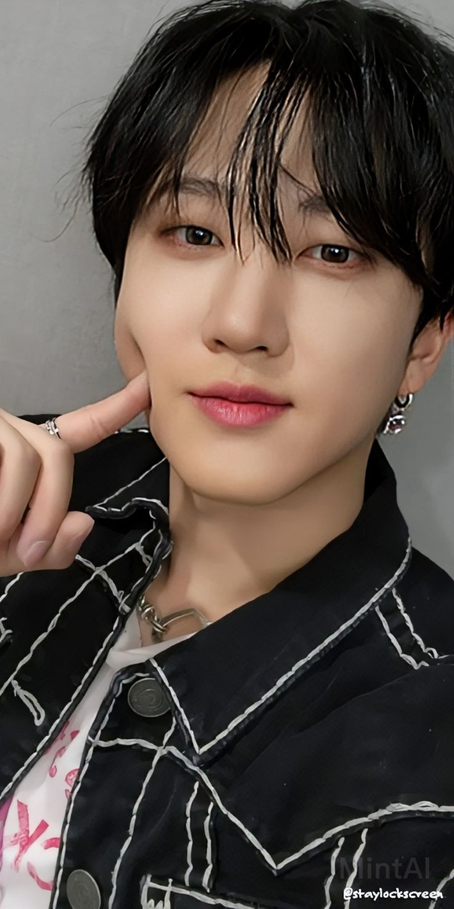
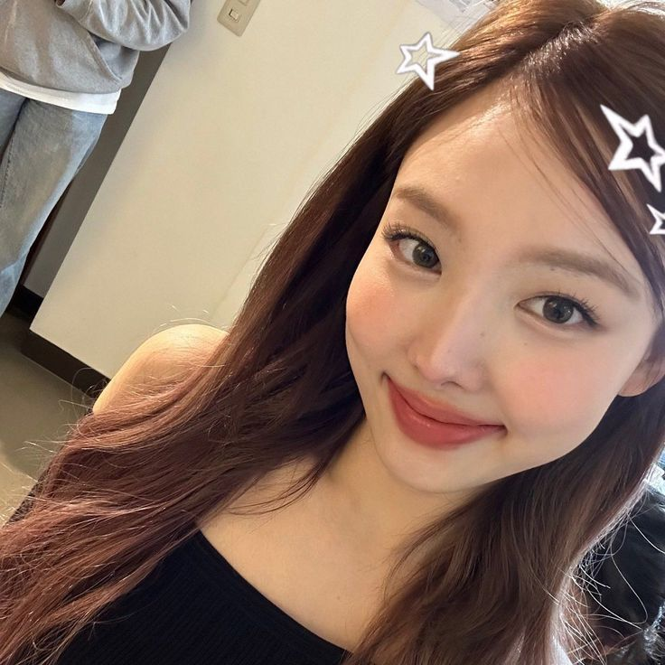
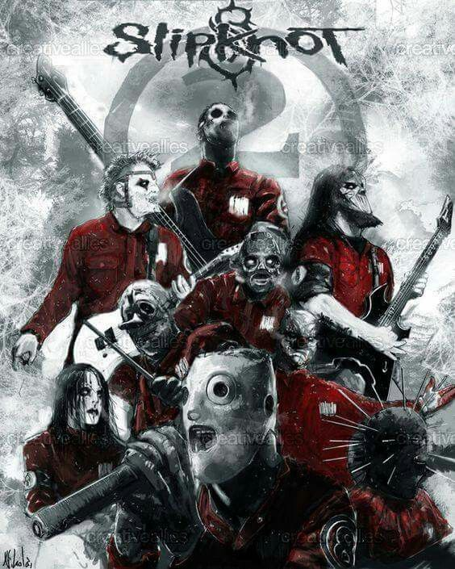

Esse site foi criado pelo MEDIUM, namorado do Jake, para postar coisas que o HunterJake gosta! Sempre estará sendo atualizado, e o MEDIUM ama muito o Jake.
Favoritos do Vavaŕo
Cinnamoroll ★
Cinnamoroll é um personagem de pelúcia criado pela Sanrio, conhecido por seu corpo fofinho, orelhas longas e cauda enrolada, que lembra um rolinho. Ele é extremamente popular entre os fãs de personagens fofos e adorado por muitas pessoas ao redor do mundo.
Mundo de Mia ★
Mundo de Mia é uma série de animação infantil que segue as aventuras de Mia, uma garota que embarca em diversas jornadas e desafios enquanto aprende sobre amizade, coragem e a importância de ajudar os outros.

Com personagens cativantes e histórias emocionantes, o Mundo de Mia se tornou uma produção popular entre crianças e famílias ao redor do mundo, com temas educativos misturados com magia e fantasia.
Barbie
A Barbie é uma das bonecas mais icônicas do mundo, criada pela Mattel em 1959. Ao longo dos anos, a Barbie se transformou em um símbolo de diversidade e empoderamento feminino, passando por diversas transformações de carreira e estilo. Ela é conhecida por sua estética única e por inspirar crianças e adultos a explorarem o mundo da imaginação e da criatividade.

Mako Mermaids ★
Mako Mermaids é uma série australiana que se passa em uma ilha mágica habitada por sereias. A história segue três adolescentes que se transformam em sereias após um incidente com uma lua cheia. A série mistura aventura, mistério e magia enquanto explora as relações entre as sereias e os humanos. Com seus efeitos visuais e enredo encantador, Mako Mermaids se tornou um sucesso para muitos fãs do gênero fantástico.
Monster High ★
Monster High é uma franquia de brinquedos, animações e filmes que apresenta uma coleção de personagens inspirados em monstros e criaturas míticas, como vampiros, zumbis, sereias e lobisomens, mas com uma pegada moderna e divertida. A série segue a vida dos filhos dos monstros mais famosos, enquanto enfrentam os desafios do ensino médio e lidam com temas de amizade, diversidade e aceitação.
Mr. Pickles ★
Mr. Pickles é uma série de animação adulta que segue a vida de um cãozinho chamado Pickles, que aparentemente é um cachorro normal, mas na verdade esconde um lado sombrio e psicótico.
A série mistura comédia e terror de uma maneira única, abordando temas de violência e humor negro com um estilo de animação peculiar e excêntrico.
South Park
South Park é uma série de animação adulta conhecida por seu humor irreverente e satírico, abordando temas políticos e sociais de maneira provocativa e sem filtros.
A série segue os personagens Stan, Kyle, Cartman e Kenny, enquanto eles enfrentam situações absurdas e eventos incomuns em sua cidade natal, South Park. Seu estilo de animação e comédia única conquistou uma legião de fãs ao longo dos anos.
Hyunjin ★
Hyunjin é um dos membros do grupo de K-pop Stray Kids. Ele é conhecido por seu carisma e habilidades de dança impressionantes, além de ser um dos favoritos entre os fãs. Sua energia no palco e seu visual charmoso são características marcantes.
Seungmin ★
Seungmin também é um membro do Stray Kids, e é famoso por sua voz suave e doce. Ele se destaca no grupo tanto como vocalista quanto por sua personalidade amigável e divertida, conquistando corações por sua dedicação e entusiasmo.
Changbin
Changbin é outro integrante do Stray Kids, e seu rap poderoso e presença de palco imponente fazem dele um dos favoritos. Sua personalidade forte e sua habilidade de criar músicas profundas são características que impressionam os fãs.

Nayeon
Nayeon é uma das integrantes do grupo TWICE, conhecida por sua energia cativante e sorriso adorável. Ela é uma das líderes do grupo e se destaca por suas performances e habilidade vocal.

Chaewon
Chaewon é uma das vocalistas do LE SSERAFIM, e é adorada por sua beleza e talento. Ela tem uma presença de palco incrível e se destaca por sua atuação vocal cheia de emoção e técnica.
Chaeryoung
Chaeryoung é conhecida por sua energia no palco e por suas habilidades de dança. Ela é uma das integrantes do TWICE e tem conquistado uma grande base de fãs devido ao seu charme e talento.
Lisa
Lisa, do BLACKPINK, é uma das artistas mais influentes do K-pop. Sua habilidade na dança, no rap e seu estilo único a tornaram um ícone mundial. Sua popularidade transcende as fronteiras da música, tornando-a um verdadeiro fenômeno.
Yeonjun
Yeonjun, do TXT, é reconhecido por suas habilidades de dança e rap, além de seu estilo distinto. Ele possui uma personalidade carismática que encanta seus fãs, fazendo dele um dos membros mais amados do grupo.
Niki
Niki é um dos membros do ENHYPEN e é famoso por sua habilidade de dança e por ser uma das estrelas mais jovens do K-pop. Sua energia jovem e habilidade em se conectar com os fãs fazem dele um dos favoritos.
Greninja
Greninja é um Pokémon do tipo Água e Sombrio, conhecido por sua agilidade e habilidades de combate excepcionais. Ele é a evolução final de Froakie, o Pokémon inicial de Kalos na sexta geração.
Com seu movimento de assinatura "Water Shuriken" e sua habilidade especial "Battle Bond", Greninja se tornou um dos Pokémon mais populares e amados entre os fãs. Ele também foi destaque em jogos como Super Smash Bros.
Lego Batman
Lego Batman é o personagem Batman da franquia Lego, conhecido por seu humor irreverente e por sua versão exagerada e cômica do herói da DC Comics. Ele é uma versão mais leve do Batman, mas ainda assim um herói corajoso e destemido.
Ele apareceu em diversos filmes de animação e jogos, com destaque para o filme "Lego Batman: O Filme", onde sua personalidade egoísta e divertida foi um dos principais atrativos do longa-metragem.
Slipknot
Slipknot é uma banda de metal americana conhecida por sua energia intensa, performances ao vivo imersivas e pelo uso de máscaras assustadoras. A banda mistura elementos de nu-metal, metal alternativo e death metal em seu som único.

Com álbuns de sucesso como "Iowa" e "Vol. 3: (The Subliminal Verses)", Slipknot se tornou uma das bandas mais influentes do metal contemporâneo. Suas letras profundas e músicas pesadas continuam a ressoar com fãs ao redor do mundo.
Bem-vindo ao HunterJake Site! Aqui você encontra conteúdos únicos e interessantes sobre tudo o que HunterJake gosta.
Doberman
Os Dobermans são uma raça de cães altamente inteligente e leal, conhecidos por sua coragem e energia. Eles foram originalmente criados na Alemanha no final do século XIX e são frequentemente usados como cães de guarda devido à sua agilidade e natureza protetora.
Além disso, os Dobermans são muito afetuosos com suas famílias e são conhecidos por criarem laços profundos com seus donos. Eles requerem bastante exercício e estimulação mental, o que os torna ideais para donos ativos.
Bohemian Rhapsody
"Bohemian Rhapsody" é uma das músicas mais icônicas da banda Queen, lançada em 1975. Composta por Freddie Mercury, essa música combina rock e ópera, criando uma experiência única e inesquecível para os ouvintes.
A música não segue uma estrutura convencional de versos e refrões, mas é dividida em várias seções distintas. Ao longo dos anos, "Bohemian Rhapsody" tornou-se um hino do rock e continua a ser uma das músicas mais ouvidas no mundo.
Coraline é um filme de animação baseado no livro de Neil Gaiman. Conta a história de uma jovem que descobre um mundo alternativo onde tudo parece perfeito, mas rapidamente percebe que há algo de sinistro por trás da realidade.
Lançado em 2009, o filme é um conto sombrio que explora temas como família, coragem e o perigo das ilusões. Com sua atmosfera única e visual impressionante, Coraline tornou-se um clássico moderno entre crianças e adultos.
Xadrez
O xadrez é um jogo de estratégia jogado entre dois jogadores. Cada jogador começa com 16 peças: um rei, uma dama, duas torres, dois cavalos, dois bispos e oito peões. O objetivo do jogo é dar xeque-mate ao rei adversário, uma situação em que o rei está em risco de captura e não pode se mover para uma posição segura.
Ordem Paranormal - Segredo na Ilha
Ordem Paranormal: Segredo na Ilha é um RPG de mesa brasileiro criado por Fábio Yabu e Rafael Dragaud. Este jogo mistura elementos de mistério, terror e investigação. A história se passa em uma ilha isolada, onde os jogadores devem descobrir segredos e sobreviver a fenômenos paranormais. É uma experiência envolvente, com uma narrativa única que explora o sobrenatural e o desconhecido.
Os personagens são desafiados a resolver mistérios enquanto enfrentam forças obscuras e poderes paranormais. O jogo tem mecânicas de narrativa e tomada de decisões que permitem criar uma história personalizada a cada sessão.
Helluva Boss
Helluva Boss é uma série animada criada por Vivienne "VivziePop" Medrano. A série é uma comédia de humor negro que se passa no inferno, onde um grupo de demônios trabalha em uma agência de assassinatos chamada I.M.P. (Immediate Murder Professional).
A série é conhecida por seu humor irreverente, personagens excêntricos e cenas animadas cheias de ação. Cada episódio foca em diferentes aspectos da vida desses demônios, abordando temas como trabalho, relações e caos no inferno.
Balé
O balé é uma forma de dança que requer técnica, graça e disciplina. Originado na Itália do século XV e popularizado na França, o balé é uma das formas de dança mais clássicas e apreciadas em todo o mundo.
Black Swan
O filme Black Swan, dirigido por Darren Aronofsky, é um thriller psicológico que explora os dilemas de uma bailarina interpretada por Natalie Portman, que busca a perfeição em sua arte enquanto lida com os próprios conflitos internos.
Patinação no Gelo
A patinação no gelo é um esporte de inverno que envolve deslizar sobre uma superfície de gelo usando patins. Pode ser praticado de forma recreativa ou competitiva, com eventos como o patinação artística e o hóquei no gelo.
Master Chef
MasterChef é um programa de televisão baseado em competição culinária, onde chefs amadores competem em desafios gastronômicos para ganhar o título de MasterChef. O programa é famoso por suas provas desafiadoras e pela criatividade dos participantes.
Woo-young-Woo, lindo ao contrário continua sendo Woo-young-woo, como catraca, caneca, careca, comic, Woo-young-woo.


.jpeg)